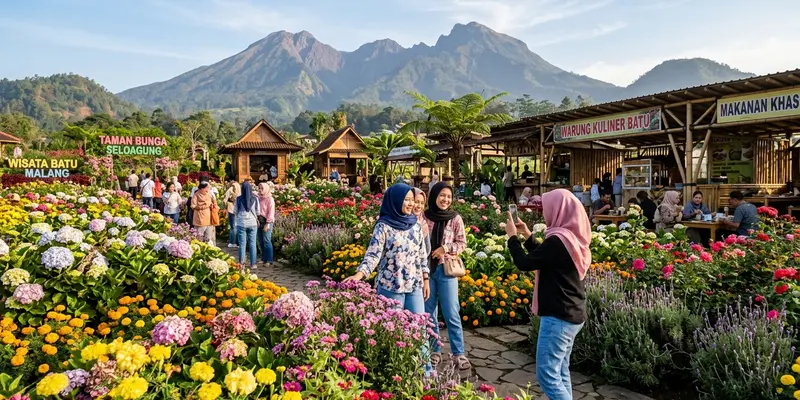

Musim panen strawberry Batu umumnya berlangsung paling melimpah saat musim kemarau karena kondisi cuaca yang lebih kering mendukung pertumbuhan buah, meski sebagian kebun tetap berproduksi dengan hasil bervariasi sepanjang tahun.
Ringkasan Inti
- Musim kemarau umumnya menjadi periode hasil panen strawberry paling optimal di Batu.
- Kondisi dataran tinggi dan suhu sejuk Kota Batu mendukung budidaya strawberry sepanjang tahun.
- Curah hujan tinggi dapat memengaruhi kualitas dan jumlah buah yang siap dipetik.
- Sebagian kebun tetap buka di musim hujan meski hasil panen cenderung lebih terbatas.
- Mengecek kondisi kebun sebelum berkunjung membantu menghindari kekecewaan wisatawan.
Kapan Musim Panen Strawberry di Batu Berlangsung?
Musim panen strawberry di Batu umumnya berlangsung lebih optimal pada musim kemarau, yang di wilayah ini biasanya terjadi pada pertengahan tahun. Pada periode ini, kondisi cuaca yang lebih kering dianggap mendukung pembentukan buah yang lebih baik dibanding musim hujan.
Meski demikian, penentuan musim panen yang tepat dapat bervariasi setiap tahunnya tergantung kondisi iklim, sehingga wisatawan disarankan mengecek langsung ke pengelola kebun mengenai jadwal panen terbaru sebelum merencanakan kunjungan.
Apa Faktor yang Memengaruhi Hasil Panen Strawberry di Batu?
Faktor yang memengaruhi hasil panen strawberry di Batu meliputi curah hujan, suhu udara, kelembapan tanah, serta teknik budidaya yang diterapkan petani setempat. Kombinasi faktor ini menentukan seberapa banyak dan seberapa manis buah yang dihasilkan.
Curah hujan yang terlalu tinggi dapat menyebabkan buah strawberry lebih mudah membusuk sebelum matang sempurna, sementara suhu udara yang terlalu panas juga dapat memengaruhi kualitas rasa buah. Oleh karena itu, suhu sejuk khas dataran tinggi Batu dianggap sebagai kondisi yang relatif ideal untuk budidaya strawberry dibanding daerah dataran rendah.

Hamparan kebun strawberry subur yang berproduksi optimal di dataran tinggi Batu Malang.
Apakah Kebun Strawberry di Batu Buka Sepanjang Tahun?
Sebagian kebun strawberry di Batu tetap buka sepanjang tahun karena penerapan teknik budidaya tertentu seperti penggunaan naungan atau pengaturan pola tanam, meski hasil panen pada musim hujan umumnya lebih terbatas dibanding musim kemarau.
Bagi wisatawan yang berkunjung di luar musim kemarau, disarankan menghubungi pengelola kebun terlebih dahulu untuk memastikan ketersediaan buah yang siap dipetik, agar kunjungan tetap dapat dinikmati secara maksimal.
Bagaimana Cara Mengetahui Jadwal Panen Strawberry Sebelum Berkunjung?
Cara mengetahui jadwal panen strawberry sebelum berkunjung adalah dengan menghubungi langsung pengelola kebun agro wisata Batu melalui kontak resmi atau media sosial resmi tempat wisata tersebut sebelum melakukan perjalanan.
Selain menghubungi pengelola, wisatawan juga dapat mencari informasi terbaru melalui ulasan pengunjung lain di platform perjalanan daring, meskipun sebaiknya tetap dikonfirmasi ulang mengingat kondisi kebun dapat berubah dalam waktu singkat.
Apa Dampak Musim terhadap Pengalaman Wisata Petik Strawberry?
Musim yang tepat dapat memengaruhi kepuasan wisatawan karena ketersediaan buah yang lebih banyak memberi pengalaman memetik yang lebih memuaskan, sementara musim dengan hasil panen terbatas dapat membuat area kebun yang dapat dipetik menjadi lebih sedikit.
Dampak musim ini juga memengaruhi harga buah di beberapa kebun, di mana harga strawberry per kilogram dapat sedikit berbeda tergantung ketersediaan hasil panen pada periode kunjungan tersebut.
Kesimpulan
Musim panen strawberry Batu paling optimal umumnya terjadi saat musim kemarau, meski sebagian kebun tetap beroperasi sepanjang tahun dengan hasil yang bervariasi. Mengecek jadwal panen langsung ke pengelola kebun sebelum berkunjung adalah langkah yang paling disarankan agar pengalaman wisata petik strawberry berjalan optimal.
Pertanyaan yang Sering Diajukan
Waktu terbaik umumnya saat musim kemarau karena kondisi cuaca yang lebih kering mendukung hasil panen yang lebih melimpah.
Ya, musim hujan dapat menyebabkan buah lebih mudah membusuk dan mengurangi jumlah buah yang siap dipetik dibanding musim kemarau.
Cara paling akurat adalah menghubungi langsung pengelola kebun agro wisata Batu sebelum merencanakan kunjungan.